Penalised regression models
Imperial College London
Aug 2, 2024
Overview
Penalised regression
Ridge regression
Lasso
Elastic net
Tuning the different parameters
Examples in R and applications
The linear model
\[ y = \alpha + x\beta + \epsilon \]
\(y\): Outcome, response, dependent variable with dimension: \(n \times 1\)
\(x\): Regressors, exposures, covariates, input, explanatory, or independent variables with dimension: \(n \times p\)
\(\epsilon\): Residuals, error
\(\alpha\): Intercept
\(\beta\): Regression coefficients, vector of length \(p\)
Classical regression
The ordinary least squares \(\hat{\beta}_{OLS}\) is defined as: \(\hat{\beta}_{OLS} = \underbrace{(x^t x)^{(-1)} }_{p \times p} \underbrace{x^t}_{p \times n} \underbrace{y}_{n \times 1}\)
The residual sum of squares (RSS) is minimised by the ordinary least squares estimate:
\[ \begin{align} RSS(\alpha, \beta) & = \epsilon_1^2 + … + \epsilon_i^2 + … + \epsilon_n^2 = \sum_{i=1}^n \epsilon_i^2 \nonumber \\& = \sum_{i=1}^n \left(y_i - \hat{y}_i \right)^2 \nonumber = \sum_{i=1}^n \left(y_i - (\alpha + \beta x_i) \right)^2 \nonumber \end{align} \]
Residual sum of squares (RSS)
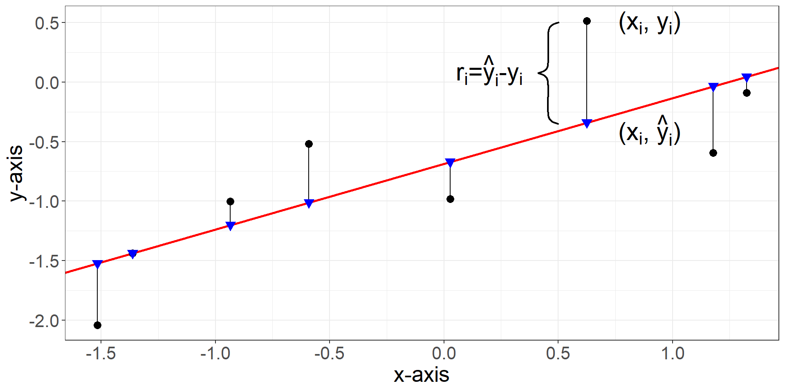- Note \(\sum_{i=1}^n\epsilon_i=0\)
Classical regression and high-dimensional data
- When \(n<<p\) the ordinary least squares cannot be computed because \(\underbrace{(x^t x)}_{p \times p}\) is singular (rank \(n\))
Bias-variance trade-off
The ordinary least squares estimate is best linear unbiased estimator (BLUE).
BEST (smallest variance) among UNBIASED (zero bias) estimators.
When considering high-dimensional data, the OLS estimate has a high variability. (dramatically different over different samples).
We rather prefer an estimate that is biased (towards a sensible option, e.g. the Null), but is precise, (ie has low variance).
Idea
Tip
Control the estimates’ variance by not allowing the to be too big. Constraints on how big they get. Does it remind you anything?
Motivation for penalised least squares
Minimise RSS but with penalty
\[\underset{\alpha, \beta}{argmin} = \underbrace{RSS(\alpha,\beta)}_{\text{Residual Sum of Squares}} + \underbrace{\lambda f(\beta)}_{\text{penalty}} \]
Residual Sum of Squares: \(RSS(\alpha,\beta) = \sum_{i=1}^n \left(y_i - (\alpha + \beta x_i) \right)^2\)
Penalty term as a function of the regression coefficients \(\beta\): \(f(\beta)\)
Regularization parameter: \(\lambda\)
The intercept is not penalised
Motivation for penalised least squares
The penalty introduces a bias, so why do it?
Which variables do we include? Only those for which it is worth to take the penalty.
Occam’s razor: It induces sparsity and favours models with lower complexity (Lasso and elastic net).
Regularizes the inversion of \(x^t x\) (Ridge regression).
Different penalty terms define different methods
\[\underset{\alpha, \beta}{argmin} = RSS(\alpha,\beta) + \lambda f(\beta)\]
Ridge regression: L2 penalty: \(\lambda f(\beta) = \lambda \sum_{j=1}^p \beta_j^2\)
Lasso regression: L1 penalty: \(f(\beta) = \lambda \sum_{j=1}^p \left| \beta_j \right|\)
Elastic net regression: L1 + L2 penalty:
\[\lambda f(\beta) = \lambda_1 \sum_{j=1}^p \left| \beta_j \right| + \lambda_2 \sum_{j=1}^p \beta_j^2\]
Ridge regression
Ridge regression uses the L2 norm as penalty:\[\underset{\alpha, \hat{\beta}_{Ridge}}{argmin} = \underbrace{RSS(\alpha,\beta)}_{\text{Residual Sum of Squares}} + \underbrace{\lambda \sum_{j=1}^p \beta_j^2}_{\text{penalty}}\]
Interpretation:
The Ridge regression coefficient \(\hat{\beta}_{Ridge}\) is a biased estimate, but has a reduced variance compared to \(\hat{\beta}_{OLS}\).
There is no intrinsic model selection in Ridge regression, all \(p\) variables will have \(\hat{\beta}_{Ridge} \neq 0\).
Minimise the RSS while forcing \(\beta\) not to be very large.
Ridge regression: Geometric interpretation
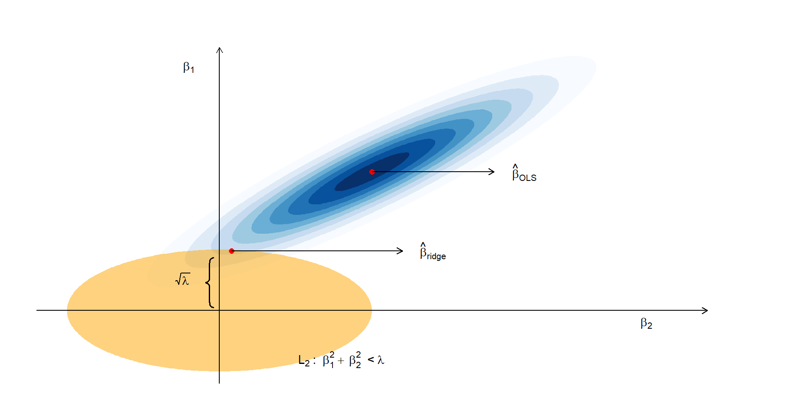Ridge regression
\[\sum(Y_i - \alpha - \beta_1x_i - \dots )^2 \text{ subject to } ||\beta||_2^2\leq c^2\]
\[F(\alpha, \beta, \lambda) = \sum(Y_i - \alpha - \beta_1x_i - \dots )^2 + \lambda(\beta_1^2 + \beta_2^2 + \dots - c^2)\]
How can we solve it?
Partial derivatives
Numerical solution using different values for \(\lambda\). Note \(\lambda \geq 0\):\(argmin\{F(\alpha, \beta, \lambda)\} = RSS(\alpha,\beta) + \lambda \sum_{j=1}^p \beta_j^2\)
When \(\lambda\): \(\lambda=0\), then OLS, when \(\lambda>>0\), then \(\beta\)=0
Ridge regression and OLS
The ridge regression estimate is available in closed form
\[\hat{\beta}_{Ridge} = \underbrace{(x^t x + \lambda I)^{(-1)} }_{p \times p} \underbrace{x^t}_{p \times n} \underbrace{y}_{n \times 1}\]
where \(I\) is a \(p \times p\) diagonal matrix with ones on the diagonal and zero on the off-diagonal
\(x^t x + \lambda I = n \begin{bmatrix} cov(x_1) & cov(x_{12}) & cov(x_{13} \\ cov(x_{21}) & cov(x_2) & cov(x_{23}) \\ cov(x_{31}) & cov(x_{23}) & cov(x_3) \end{bmatrix} + \begin{bmatrix} \lambda & 0 & 0 \\ 0 & \lambda & 0 \\ 0 & 0 & \lambda \end{bmatrix}\)
This resembles the OLS estimate apart from \(+ \lambda I\).
Ridge regression and OLS
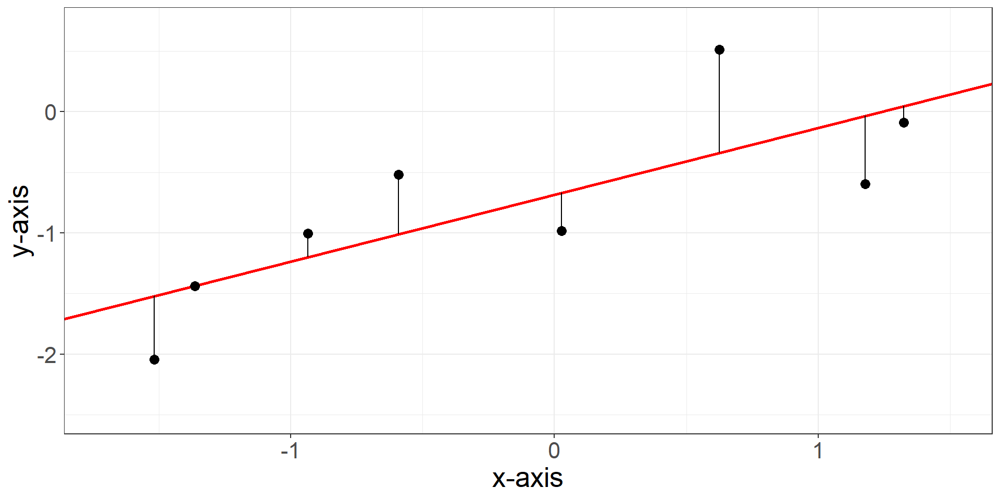Ridge regression and OLS
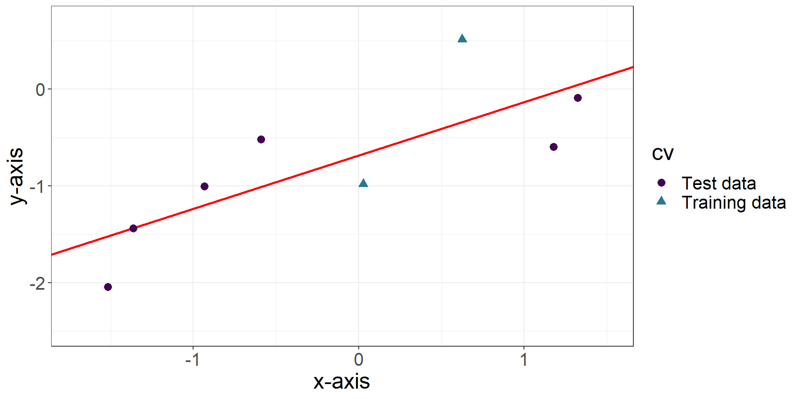Ridge regression and OLS
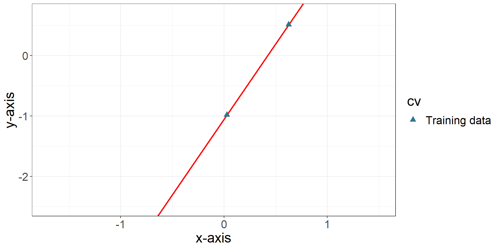Ridge regression and OLS
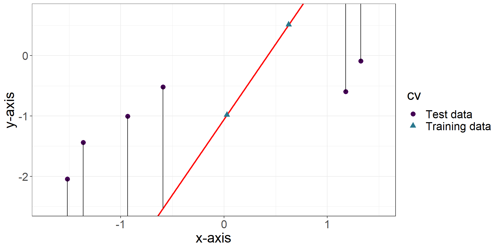Ridge regression and OLS
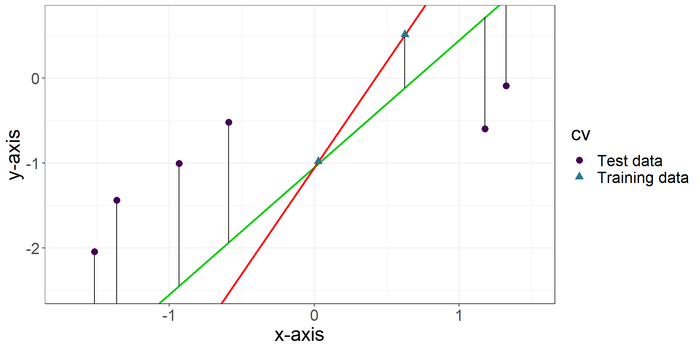Ridge regression and OLS

Lasso regression
\[\underset{\hat{\alpha}, \hat{\beta}_{Lasso}}{argmin} = \underbrace{RSS(\alpha,\beta)}_{\text{Residual Sum of Squares}} + \underbrace{\lambda \sum_{j=1}^p \left| \beta_j \right| }_{\text{penalty}} \]
Interpretation:
The Lasso regression coefficient \(\hat{\beta}_{Lasso}\) is a biased estimate, but has a reduced variance compared to \(\hat{\beta}_{OLS}\).
There is an intrinsic model selection in Lasso regression, as it sets certain variables exactly to \(\hat{\beta}_{Lasso} = 0\), and thus excludes them from the model.
When two variables are highly correlated, Lasso includes only one (at random) and not both.
Lasso regression: Geometric interpretation
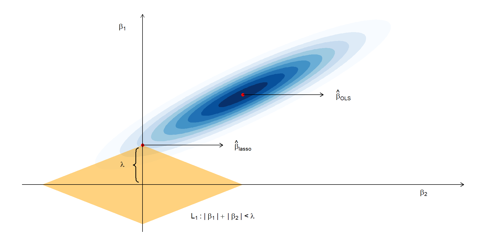Ridge and lasso: Induced shrinkage
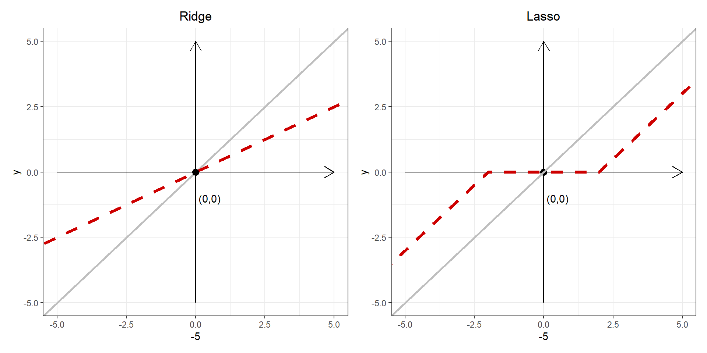Ridge and lasso: Bayesian interpretation
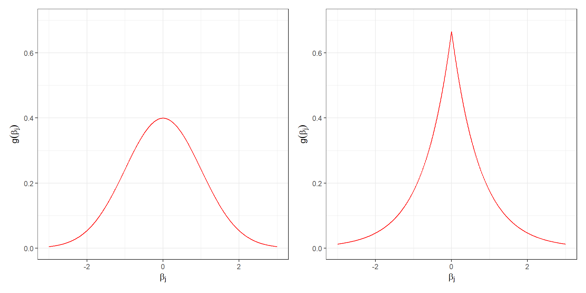Elastic net
\(\underset{\hat{\alpha}, \hat{\beta}_{\text{Elastic net}}}{argmin} = \underbrace{RSS(\alpha,\beta)}_{\text{Residual Sum of Squares}} + \underbrace{\lambda_1 \sum_{j=1}^p \left| \beta_j \right| + \lambda_2 \sum_{j=1}^p \beta_j^2}_{\text{penalty}}\)
The Elastic net regression coefficient \(\hat{\beta}_{\text{Elastic net}}\) is a biased estimate, but has a reduced variance compared to \(\hat{\beta}_{OLS}\)
There is an intrinsic model selection in Lasso regression, as it sets certain variables exactly to \(\hat{\beta}_{\text{Elastic net}} = 0\), and thus excludes them from the model.
When two variables are highly correlated, Elastic net includes both (Grouping property).
Elastic net regression: reparametrization
\[\underset{\hat{\alpha}, \hat{\beta}_{\text{Elastic net}}}{argmin} = \underbrace{RSS(\alpha,\beta)}_{\text{Residual Sum of Squares}} + \lambda \bigg[\alpha\left|\left|\beta \right|\right|_1 + (1-\alpha)\left|\left|\beta \right|\right|_2^2 \bigg]\]
\(\alpha\) can be seen as a mixing parameter
When \(\alpha = 0\) ridge regression
When \(\alpha = 1\) lasso regression
How can we select the optimal \(\lambda\) and \(\alpha\)?
Elastic net: Geometric interpretation
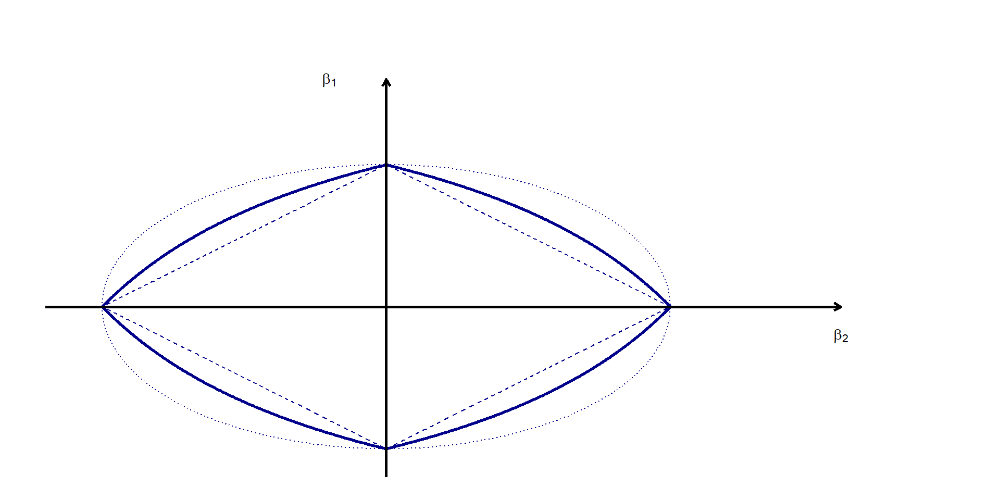How to tune the regularisation parameter?
\[\underset{\alpha, \beta}{argmin} = RSS(\alpha,\beta) + \lambda f(\beta) \nonumber\]
\(\lambda\) is the regularisation parameter
\(\lambda = 0\): No regularisation
Small \(\lambda\): Minimal regularisation
Large \(\lambda\): Strong regularisation
How to choose the optimal \(\lambda\)?
Cross-validation
Prediction using penalised regression
Regularized regression is an ideal tool for prediction.
We can define a prediction rule \(\hat{f}(x)\) using the penalised regression coefficients:\[\hat{y} = \hat{f}(x) = \alpha + x \hat{\beta}_{\text{Penalised}}\]
where \(\hat{\beta}_{\text{Penalised}}\) are the \(p\) regularized coefficients.
Since Lasso and Elastic net force some \(\hat{\beta}_{\text{Penalised}}\) to zero, variables with \(\hat{\beta}_{\text{Penalised}}=0\) are excluded from the model and do not contribute to the prediction rule.
In contrast in Ridge regression variables contribute to \(\hat{f}(x)\).
Penalised regression in R: glmnet()
Input
\(y\): Outcome or response
\(x\): Predictors, formatted
as.matrix(x)
Generalised linear models included
- family =
gaussian,binomial,poisson,multinomial,cox,mgaussian
Penalised regression in R: glmnet()
Penalised regression models
Ridge regression: \(\text{alpha} = 0\)
Lasso regression: \(\text{alpha} = 1\)
Elastic net: \(0<\text{alpha}<1\)
Regularisation parameter:
- Perform cross-validation
Penalised regression in R: glmnet()
Values:
Intercept:
glmnet.out$a0Regression coefficient estimates:
glmnet.out$betaRegularisation parameters used:
glmnet.out$lambda
Functions:
Cross-validation:
cv.glmnet()Regression coefficients:
coef(glmnet.out)Prediction:
predict(glmnet.out, newx)
Penalised regression in R: glmnet()
For more details on glmnet, see the useful vignette:
http://web.stanford.edu/~hastie/glmnet/glmnet_alpha.html
Other packages in R
lm.ridgein theMASSpackagelarsin thelarspackagepenalizedin thepenalizedpackage
Diabetes data
- \(y\): quantitative measure of disease progression
- \(x\): predictor matrix
- clinical parameters: age, sex, bmi
- map: blood pressure
- tc: total cholesterol
- ldl: low-density lipoprotein
- hdl: high-density lipoprotein
- tch: total cholesterol over hdl
- ltg: triglycerides
Diabetes data
library(lars)
library(dplyr)
library(glmnet)
data(diabetes)
x <- as.matrix(diabetes$x)
y <- diabetes$y
head(x) age sex bmi map tc ldl
[1,] 0.038075906 0.05068012 0.06169621 0.021872355 -0.044223498 -0.03482076
[2,] -0.001882017 -0.04464164 -0.05147406 -0.026327835 -0.008448724 -0.01916334
[3,] 0.085298906 0.05068012 0.04445121 -0.005670611 -0.045599451 -0.03419447
[4,] -0.089062939 -0.04464164 -0.01159501 -0.036656447 0.012190569 0.02499059
[5,] 0.005383060 -0.04464164 -0.03638469 0.021872355 0.003934852 0.01559614
[6,] -0.092695478 -0.04464164 -0.04069594 -0.019442093 -0.068990650 -0.07928784
hdl tch ltg glu
[1,] -0.043400846 -0.002592262 0.019908421 -0.017646125
[2,] 0.074411564 -0.039493383 -0.068329744 -0.092204050
[3,] -0.032355932 -0.002592262 0.002863771 -0.025930339
[4,] -0.036037570 0.034308859 0.022692023 -0.009361911
[5,] 0.008142084 -0.002592262 -0.031991445 -0.046640874
[6,] 0.041276824 -0.076394504 -0.041180385 -0.096346157Ridge regression and diabetes data
cbind(
lm(y~x) %>% coef(),
glmnet(x,y,family="gaussian",alpha=0,lambda=0.1) %>% coef(),
glmnet(x,y,family="gaussian",alpha=0,lambda=1) %>% coef()
)11 x 3 sparse Matrix of class "dgCMatrix"
s0 s0
(Intercept) 152.13348 152.133484 152.133484
age -10.01220 -9.358965 -6.698824
sex -239.81909 -238.769510 -233.325125
bmi 519.83979 520.713588 520.019917
map 324.39043 323.548886 319.639206
tc -792.18416 -666.737488 -320.594626
ldl 476.74584 377.500940 103.343333
hdl 101.04457 45.579036 -104.230542
tch 177.06418 161.855769 124.122091
ltg 751.27932 703.885551 568.507179
glu 67.62539 68.277472 71.865726Lasso regression and diabetes data
cbind(
lm(y~x) %>% coef(),
glmnet(x,y,family="gaussian",alpha=1,lambda=0.1) %>% coef(),
glmnet(x,y,family="gaussian",alpha=1,lambda=40) %>% coef()
)11 x 3 sparse Matrix of class "dgCMatrix"
s0 s0
(Intercept) 152.13348 152.133484 152.13348
age -10.01220 -5.789635 .
sex -239.81909 -234.457334 .
bmi 519.83979 522.819506 93.58588
map 324.39043 320.347881 .
tc -792.18416 -534.397332 .
ldl 476.74584 271.305848 .
hdl 101.04457 -9.067565 .
tch 177.06418 146.255119 .
ltg 751.27932 655.715819 33.43273
glu 67.62539 66.410644 . Elastic regression and diabetes data
cbind(
lm(y~x) %>% coef(),
glmnet(x,y,family="gaussian",alpha=0.5,lambda=0.1) %>% coef(),
glmnet(x,y,family="gaussian",alpha=0.5,lambda=40) %>% coef()
)11 x 3 sparse Matrix of class "dgCMatrix"
s0 s0
(Intercept) 152.13348 152.133484 152.13348
age -10.01220 -7.373073 .
sex -239.81909 -236.908421 .
bmi 519.83979 521.524719 308.42812
map 324.39043 321.784878 53.18902
tc -792.18416 -570.166854 .
ldl 476.74584 302.943444 .
hdl 101.04457 . .
tch 177.06418 144.752485 .
ltg 751.27932 669.554762 267.61977
glu 67.62539 67.483126 . Example: Breast cancer data
- \(y\): benign or aggressive tumor (binary)
| Benign | Aggressive | Total |
|---|---|---|
| 185 | 121 | 306 |
\(x\): gene expression of \(p=22,283\) genes
\(n=306\): sample size
Truly big data \(n<<p\)
Breast cancer data and glm()
Takes a lot of time and eventually you will get a warning that the algorithm did not converge!
Breast cancer data and lasso
lasso.out = glmnet(x=as.matrix(x), y=severity, family='binomial', alpha = 1, lambda = 0.001)
sum(abs(lasso.out$beta)>0)[1] 288lasso.out = glmnet(x=as.matrix(x), y=severity, family='binomial', alpha = 1, lambda = 0.12)
sum(abs(lasso.out$beta)>0)[1] 6 s0
0.3236629 22283 x 1 sparse Matrix of class "dgCMatrix", with 6 entries
i j x
1 1662 1 -0.004526658
2 4752 1 0.058374857
3 9133 1 -0.009686168
4 9235 1 0.026345145
5 12416 1 -0.002190472
6 19988 1 -0.025081473Breast cancer data and elastic net
enet.out = glmnet(x=as.matrix(x), y=severity, family='binomial', alpha = 0.5, lambda = 0.003)
sum(abs(enet.out$beta)>0)[1] 486enet.out = glmnet(x=as.matrix(x), y=severity, family='binomial', alpha = 0.5, lambda = 0.26)
sum(abs(enet.out$beta)>0)[1] 6 s0
0.7666402 22283 x 1 sparse Matrix of class "dgCMatrix", with 6 entries
i j x
1 1662 1 -0.007657373
2 4752 1 0.027947534
3 9133 1 -0.006866718
4 9235 1 0.007115454
5 12416 1 -0.001404657
6 19988 1 -0.014191285Take away: Penalised regression models
Regularized regression approaches minimise the residual sum of squares and an additional penalty function.
Different penalties imply different approaches:
Ridge regression: \(L2\)
Lasso regression: \(L1\)
Elastic net regression: \(L1+L2\)
Take away: Penalised regression models
Penalized regression approaches are biased, they underestimate the size of the true effect.
But they reduce the variance of the estimate and the prediction rule.
Lasso and Elastic net perform an intrinsic model selection.
The regularisation parameter \(\lambda\) can be chosen using cross-validation.
Questions?